iPad
The score beside its full breakdown in wide windows, any orientation, a park in its own window, and parks or nights you can drag onto Plan or the journal.
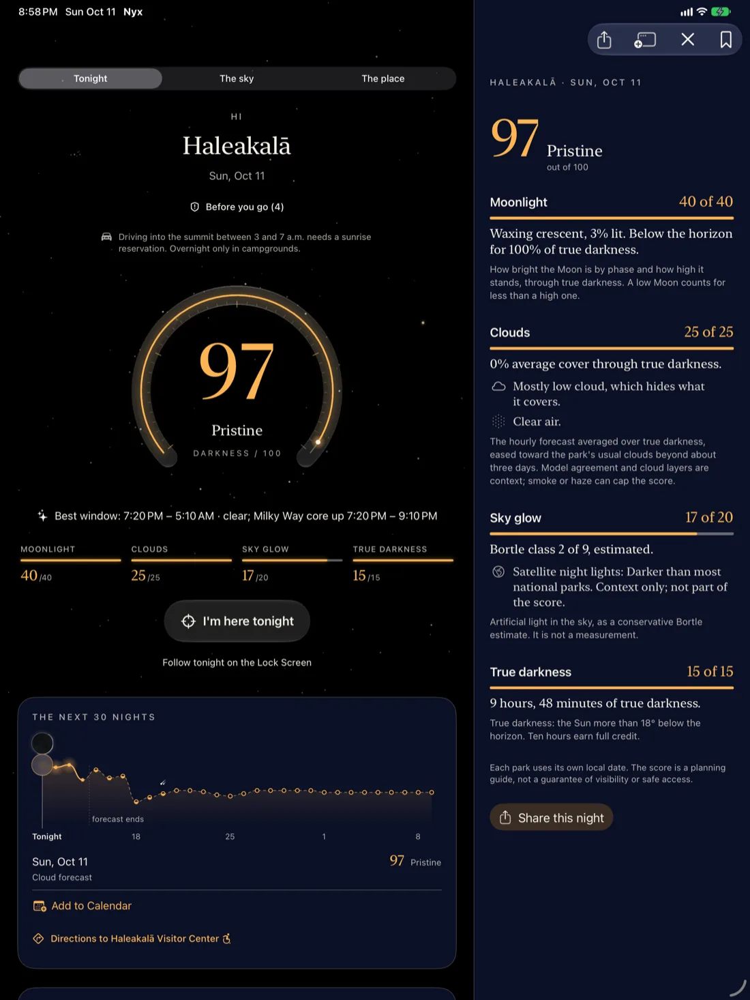
The darkest nights, wherever you are
Nyx weighs the moonlight, the clouds, the sky glow and the hours of true darkness for each place and night, and turns them into one score from 0 to 100: for the 63 US national parks, about 3,400 national parks and certified dark-sky places in 172 countries, and any spot you save. It shows its reasons, puts US park closures beside the number, and says what it cannot know.
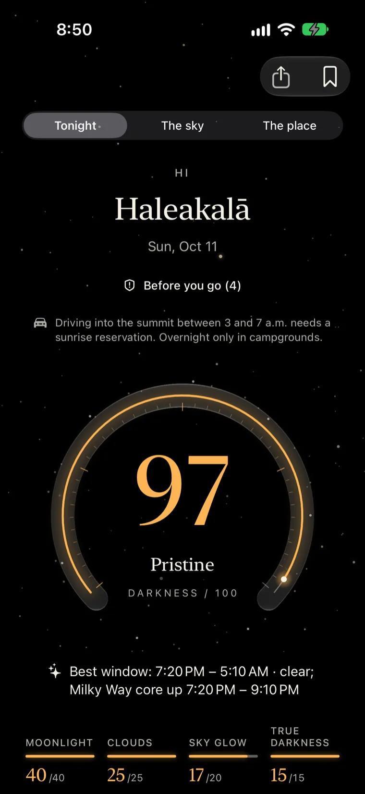
The darkness score
Four things decide whether you will see the Milky Way. Nyx adds them up for each place and night, then lets the weakest one hold the total down, because one problem is enough to spoil a night.
How much moonlight reaches the sky through the hours of true darkness, by the Moon's phase and height.
Averaged over the hours of true darkness only. At the US national parks, three weather models are compared for the coming week.
The park's estimated Bortle class, with satellite night lights to show where the glow comes from.
Hours with the Sun 18° below the horizon. In an Alaskan summer there are none, and Nyx says so.
The weakest part can cap the rest. A bright Moon, heavy cloud, a bright sky, wildfire smoke or a short night holds the score down, and Nyx names the cap under the number: "Clouds limit tonight to 55." An overcast night never reads as good.
Score bands:
Tonight
Start from where you are, from any of more than 31,500 towns and cities, from a park, or from a spot you saved. Nyx shows the best-scoring places around it tonight, with the reasons on the same screen.
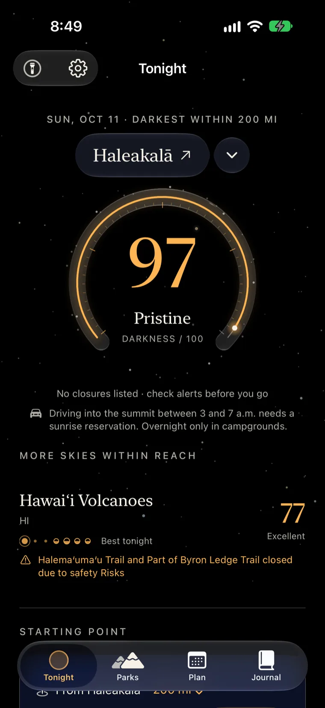
The park, in three chapters
Each park's page reads in three chapters: tonight's score and its best window, the sky and what is in it, and the place itself, with viewing spots, sky glow and where to stay.
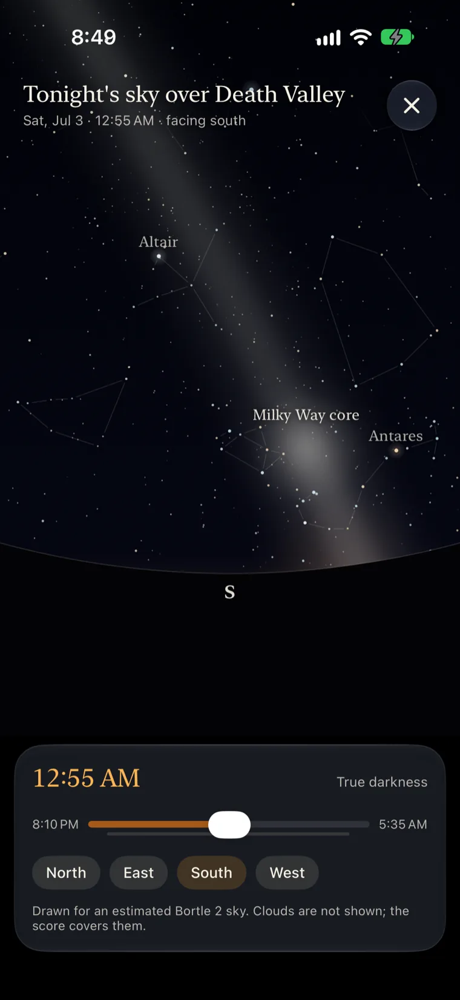
What's up tonight
The galactic core timed for the park you chose, the planets with where and when they rise, meteor showers with an honest rate range, zodiacal light, satellites, and lunar eclipses the park can actually see.
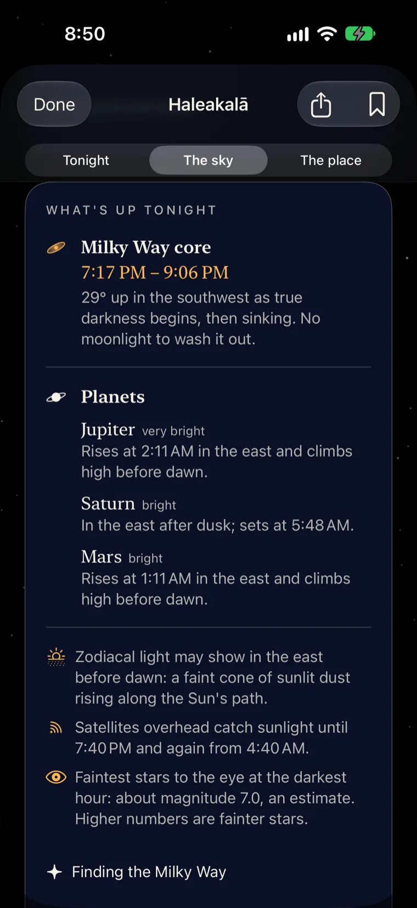
Plan
The best nights in reach over the next 30, one for each place. A month for one park, each night a small sky sized by its score, with the best five nights in a row ringed. Or tell Nyx which nights you are free, and it suggests a park for each.
A forecast is reliable for a few days. After that Nyx leans on each park's usual clouds, so every night shows which it is:
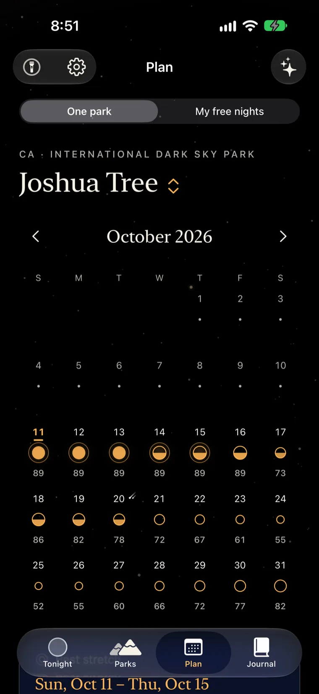
Every park tonight
The Parks tab draws all 63 US national parks by tonight's score, from Acadia to American Samoa, with closures marked. Around the world, places are grouped by country, with a world map. Tap a place to open it, or switch to the list.
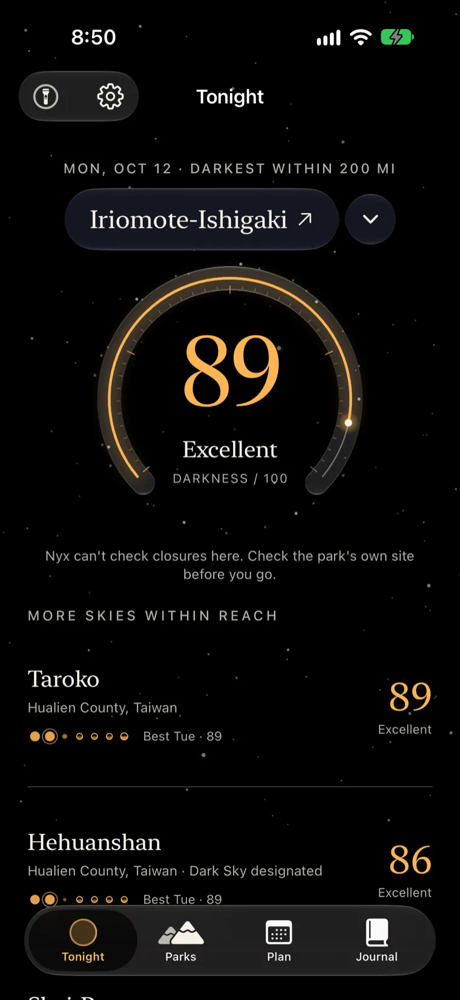
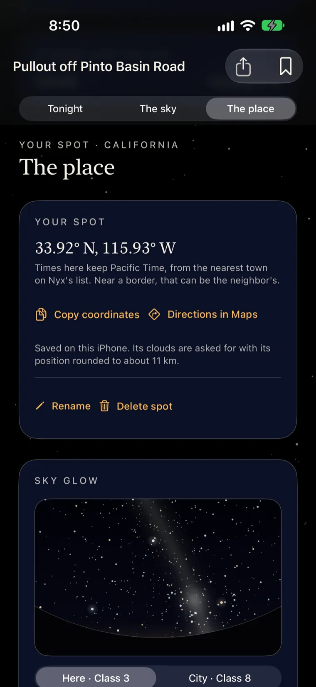
Field mode
Your eyes need twenty to thirty minutes to adapt to the dark, and one glance at a bright screen undoes much of it. Field mode dims everything to deep red, counts down to true darkness and turns the real sky to wherever you point the phone, with no camera.
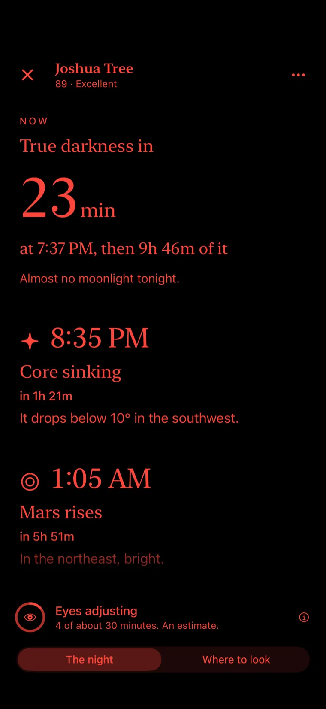
Journal
A private journal turns each night out into a star in your own constellation, and gathers your year under the stars. Add a night by voice with Siri, describe your photos, and export the journal as a file you keep.
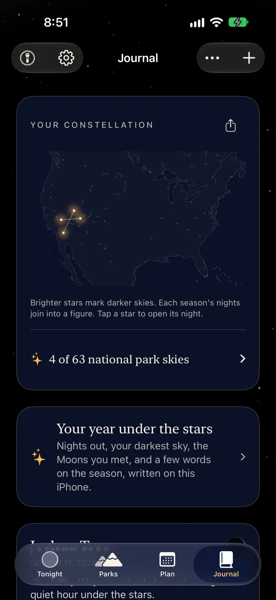
For more people
Every custom control in Nyx speaks a summary of its data. "Listen to tonight" plays the shape of the night as tones, with a transcript, and "Feel tonight" plays it as touch. Audio graphs let VoiceOver users hear a month of darkness.
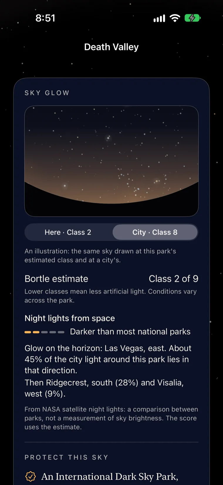
New in 2.7
Nyx 2.7 is a free update. Every score says its night in one sentence, Nyx keeps watch on a night you plan to go out, and Plan looks six months ahead.
One plain sentence
Under every score: where the Moon is during true darkness, and whether the Milky Way's core is up and clear of it. On a park's page, a clearly darker night soon. A closure is said once, and the score's parts add up in words.
I'm going
Keep a night, and Nyx checks it when it opens and when iOS allows. If it gets clearly worse, a notification says so, with a better choice when there is one. Tonight leads with your night: how it stands, when to leave from a drive time you enter, what is saved for when you lose signal, and a message you send to tell someone where you will be.
With the lights out
Start from a town, and Tonight draws your own sky at its light level, then lets the glow fall away to the sky at the darkest place within reach, and names it. It is an illustration of a summer new-moon sky, not tonight's.
The next six months
In Plan, choose one park for the best weekend around each new moon and its Milky Way season. Add them all to your calendar: Nyx can add events and never sees your calendar. Or share them as a calendar file.
Around the world
Nyx looks for the darkest nights around the world. The 63 US national parks stay at its heart, checked by hand.
Around the world
About 3,400 national parks and certified dark-sky places in 172 countries, each scored night by night. Sky brightness and usual clouds are labeled as estimates, and a place abroad says plainly that Nyx cannot check its closures.
Start anywhere
Any of more than 31,500 towns and cities as your starting point, or a spot of your own: where you stand, a pair of coordinates or a town. Spots are scored and followed like parks.
Private by region
Forecasts for places abroad are asked for by whole regions, about the size of a country. A spot you save is sent only rounded to about 11 km (7 miles), behind its own switch.
A closer look at the sky
The Moon in relief from NASA's elevation data, tonight's sky with the brightest stars named, and the forecast models' range on the dial when they disagree.
In five languages
English, Spanish, German, French and Japanese. The translations are drafts; native speakers will review each one, and their corrections follow in updates.
On every device
The score beside its full breakdown in wide windows, any orientation, a park in its own window, and parks or nights you can drag onto Plan or the journal.

Tonight's score on your wrist, the Digital Crown to look a week ahead, the forecast models' range when they differ, a dark-adaptation clock that taps when your eyes are ready, and a face that turns red at dusk.
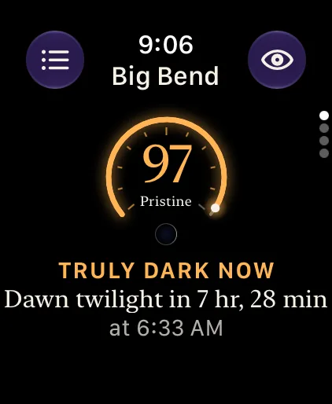
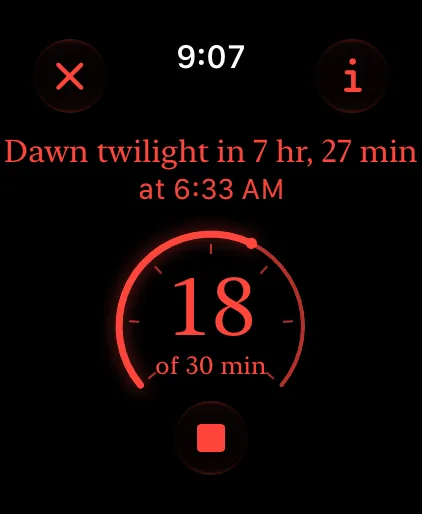
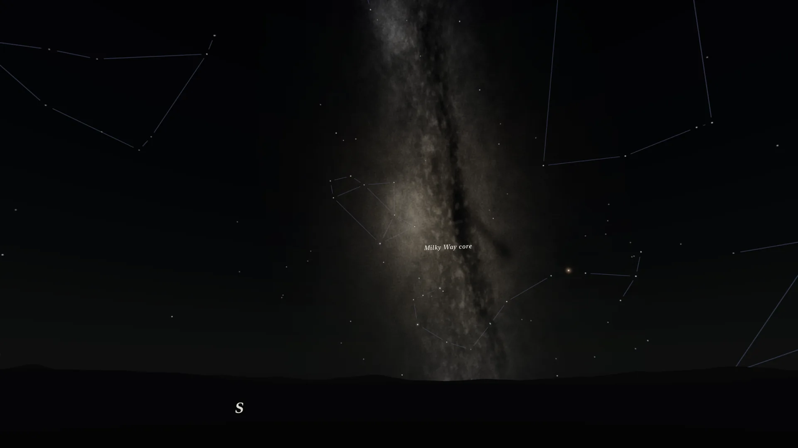
Stand under a US national park's computed sky on the night you choose, with the forecast's clouds. Tap a star for its name, turn the night by hand, and set the Moon, lit at its true phase, on your table.
On Apple Vision Pro, the Moon in NASA's color and relief, lit from the Sun's true direction for the night you pick, so its shadow line crosses craters as the phase turns.
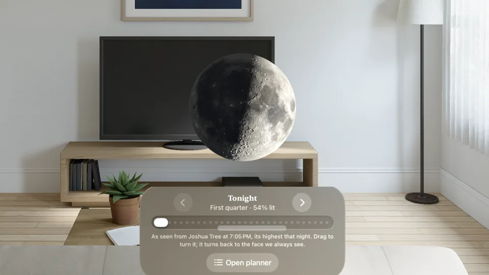
Honest by design
A planning app is only useful if you can trust it, so Nyx draws its uncertainty instead of hiding it.
Models side by side
At the US national parks, three weather models are compared for the next week. When they disagree, Nyx draws the range and says so.
Usual clouds, labelled
Beyond about three days, the forecast eases toward each park's usual clouds for the month, from ten years of climate records, and those nights are marked.
Estimates called estimates
Bortle classes, sky glow and meteor rates carry the word. Moonrise agrees with the U.S. Naval Observatory to within minutes.
Access first
A high score never means a road is open. At the US national parks, closures sit beside the number, and if alerts can't load, Nyx says so and links to the park's current conditions. Elsewhere it says it cannot check closures.
Privacy
No account, no ads, no analytics, no tracking. The astronomy runs on your device, so the Moon, twilight and the Milky Way work offline. Your journal never leaves your device.
This website is the same: no cookies, no scripts, no analytics.
App Store privacy label
Data Not Collected
Nyx asks four public services for data, and each has its own switch in Settings:
api.open-meteo.comCloud forecasts: for the 63 US parks by their public coordinates, with the cloud layers above Haleakalā's summit, for places abroad by whole regions, and for spots you save rounded to about 11 km (7 miles). Never where you are, unless you save it as a spotair-quality-api.open-meteo.comSmoke and haze forecasts: for the 63 US parks by their public coordinates, and for places abroad by the same whole regions as their clouds. Never for your spotsdeveloper.nps.govPark alerts and campgrounds for all 63 US parks, and ranger night-sky programs for the park you openservices.swpc.noaa.govNOAA's aurora forecast: one file for the whole world, at most every three hours, naming no placeFree, with no subscriptions or in-app purchases. For iPhone and iPad with iOS 26 or later, Apple Watch, and Apple Vision Pro.
Every number in the screens comes from the app's own engine and real forecasts on October 11, 2026. The sky screen shows a chosen summer night; the journal and the saved spot use samples.